|
 |
 |
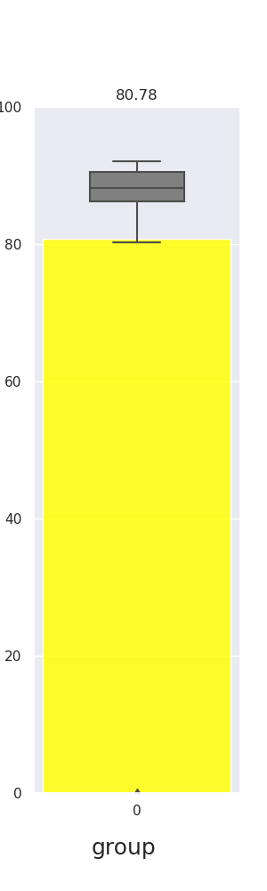 | 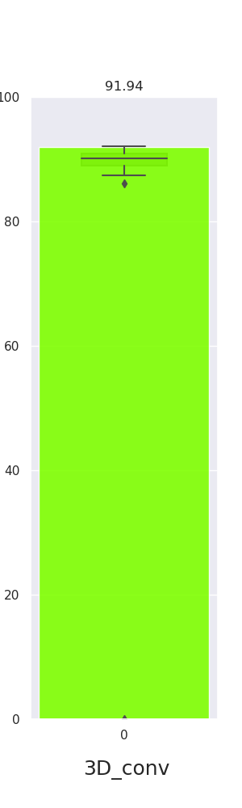 |
|
|
|
|
|
|
|
|
|
|
|
| |
|
|
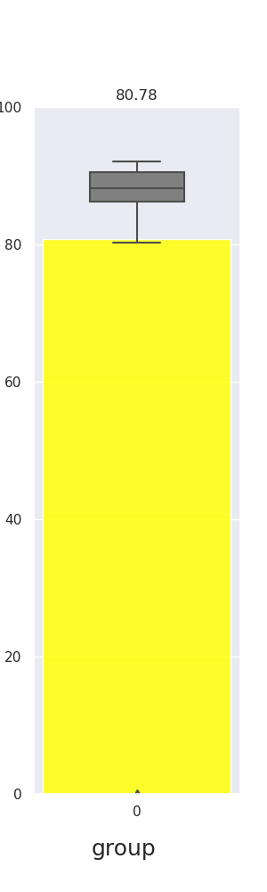 | 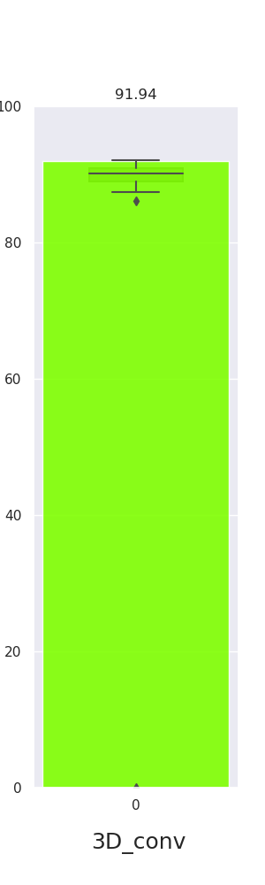 |
Abstract |
| Convolutional neural networks (CNN) are not shift-invariant and are very sensitive to small shifts of input images. This problem arises when images are downsized in the network without taking the sampling theorem into account. Some architectures were proposed to solve this problem by applying blur filters to the feature maps but we do not think that this is the best solution since the strong inductive bias may not apply to all scenarios. Here, we propose two shift-invariant modules that can combat the aliasing problem that replacing layers in the existing state-of-the-art models in a plug-and-play fashion. We tested our modules on the ImageNet dataset for solving classification problems. Our results outperform the existing works in stability and robustness perspectives. |
1. Introduction |
|
Convolutional neural networks have been proved to be a powerful tool to tackle tasks regarding images
and videos such as image classification, semantic segmentation, and object tracking. Conventional
convolutional models often heavily rely on max pool layer and convolution operations with strides larger
than one to downsample the spatial range of the input. However, naively pulling information by applying
stride operations to down-sample a complex image will inevitably lead to information loss. One simple
example is applying stride 2, $2 \times 1$ max pool to a 1D signal 100100 with 0 paddings, we will
obtain 110,
but if we shift the signal to right by 1 bit, the signal changes to 00100, and the output with the same
pooling setting becomes 010, and we cannot recover the original signal with either of the output
signals. We can observe from the toy example that convolutional neural networks are not
shift-invariant. Richard Zhang [1] have shown in their paper that the confidence score for classification problems with Alexnet and ResNet can vary drastically while the input images are shifted in pixel level. Also, they proposed using Gaussian blur to share pixel information between neighboring pixels before max pooling to perform anti-aliasing convolution. However, naively applying Gaussian blur would reduce the sharpness of the image, we thus proposed a new module to implement shift-invariant convolution while preserving the sharpness. Our method uses the dense pool, group convolution, or 3D convolution to replace conventional stride operation for downsampling, for the kernels are learned, sharpness of the image would be preserved as well. We evaluate our model on Imagenet and use ResNet-18 as backbone architecture. Our results showed that our models outperformed previous methods on (1) classification consistency, our model has a classification consistency score of 90.42% and 90.20% which is much higher than previous methods (83.01% and 87.83%), and (2) accuracy, our model has 68.78% top1 accuracy and 88.74% top5 accuracy, and (3) stability, our model has higher stability in the confidence score to the same image while shifted. |
2. Related Work |
| In [1], Richard Zhang introduces anti-aliasing filters by applying blur filters after the dense evaluation operation. In more detail, he used a max-pooling operation with a stride equal to one and then blurred images by the proposed hard-coded Gaussian kernel for sharing information with neighboring pixels. Finally, we downsize the images. The first two steps preserve the shift-invariance property. In the last step, even though the shift-invariance property is not preserved, the aliasing effect is reduced because of the added blur. |
3. Method |
3.1 Model Pipeline |
| Our model pipeline is shown in Figure 1. There are four stages in our pipeline and they will be explained in detail in the following subsections. |
| 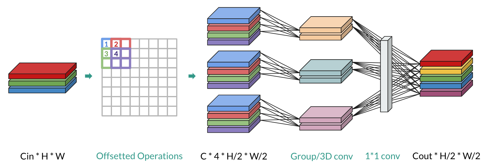 |
| Figure 1: Model pipeline. |
3.2 Sub-sampling and Rearranging |
| Given that applying operations with stride-2 induces a loss in information as shown in Figure 2, we first use stride-2 down-sampling four times from four different starting points with four offsets, respectively, on our input feature map with shape $C_{in} \times H \times W$. We denote $C_{in}$ as the input channel size, $H$ as the height of the input feature map, and $W$ is the width of the input feature map. We named these four pixels as 4-neighbor as shown in Figure 3. The next step is to keep the information of the down-sampled feature map of 4-neighbors. Thus, we rearrange the down-sampled 4-neighbor feature maps for each input channel. For example, in Figure 4, we have feature maps with three input channels, e.g., RGB, we rearrange them into RRRRGGGGBBBB. We believe that the spatial frequency domain information is kept by doing so. Now we can view the original input channel size as a group number, e.g., RGB means three groups, and see stacked 4-neighbor as a new domain, D-domain. Specifically, the shape will become $4C_{in} \times \frac{H}{2} \times \frac{W}{2}$. After these operations, no information will be lost. |
| 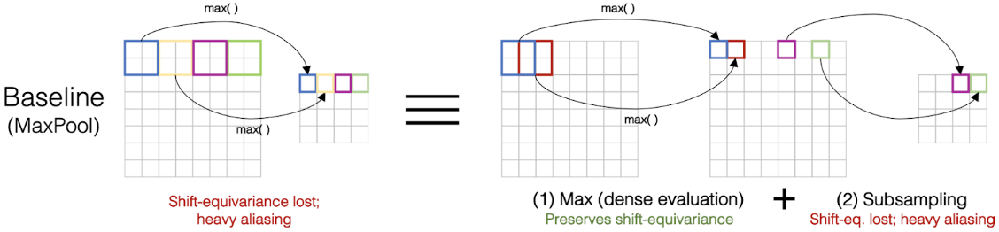 |
| Figure 2: This figure shows that any n-stride operation with $n \geq 2$ will lead to a loss in information. Figure from [1]. |
| 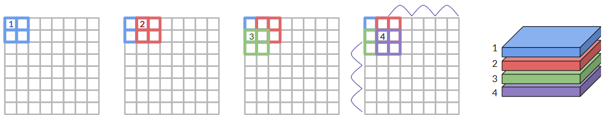 |
| Figure 3: 2 by 2 dense pool example. |
|
|
| Figure 4: Rearranging the channels from RGB to RRRRGGGGBBBB. |
3.3 Extract D-domain Information |
3.3.1 Group Convolution |
| After the rearrangement, we would like to apply group convolution [2] on the shuffled features maps to aggregate the information. Figure 5 shows how we apply group convolution on the shuffled feature maps. We divide $4C_{in}$ into $C_{in}$ groups, e.g., three for RGB, with group member as 4-neighbor. To extract D-domain information between the 4-neighbor, we apply group convolution with $C_{in}$ groups to the input feature map. However, $C_{in}$ and $C_{out}$ must both be divisible by the group number, where $C_{out}$ is the number of the expected output channels. Hence we take the least common multiple of $C_{in}$ and $C_{out}$ as our temporary number of output channels, so we can divide the output filters into $C_{in}$ groups. Now, the temporary output channels after group convolution might be larger than the expected output channels, $C_{out}$. We will deal with the issue in section 4.4. |
|
|
| Figure 5: Example of how group convolution works. |
3.3.2 3D Convolution |
| Other than group convolution, we also used 3D convolution [3] to aggregate information. Figure 6 shows how we apply 3D convolution on the shuffled feature maps. We grab 4-neighbors out to stack as D-domain and reshape the down-sampled feature map, $4C_{in} \times \frac{H}{2} \times \frac{W}{2}$, into one more dimension, $C_{in} \times 4 \times \frac{H}{2} \times \frac{W}{2}$. Then, we apply 3D convolution ro convolve filters along $H$, $W$ and $D$ axis, where $D$ axis has a fixed size of $4$. Using filters with size $3$, stride $1$, and padding $0$ on $D$ axis, the filter can only convolve twice, i.e., layer $1, 2, 3$ and then $2, 3, 4$. Hence the output size along $D$ domain will become $2$. For $H$ and $W$ domain, we simply keep the down-sampled size after 3D convolution. In the end, the shape will be $C_{out} \times 2 \times \frac{H}{2} \times \frac{W}{2}$. To be further used in later components of our module, we reshape it to $2C_{out} \times \frac{H}{2} \times \frac{W}{2}$. Again, we have more output channels than the expected output channels, $C_{out}$. We will deal with this in the next section. |
|
|
| Figure 6: Example of how 3D convolution works. |
3.4 $1\times1$ Convolution |
| So far, we only focused on the relationship between 4-neighbor and extracting the useful information with group convolution or 3D convolution. This encourages the model to learn to look at neighbor information first however, the original information between input channels, e.g., RGB, has not been merged yet. Simply applying $1\times1$ convolution at this stage lets the model see through the enlarged output channels. Also, at this point, we can downsize the enlarged output channels to the expected size. To be more specific, by setting the input dimension of $1\times1$ filter to the enlarged output channels and setting the number of $1\times1$ filters to $C_{out}$, we can get the final output with shape $C_{out} \times \frac{H}{2} \times \frac{W}{2}$. |
3.5 Module Explanation |
| The design philosophy of our module is to keep (no information loss in the first half) and extract (group convolution / 3D convolution) the information among 4-neighbor. After stacking 4 sub-sampled feature maps from 4 starting offsets, there is no information loss up to this point. To extract the information, group convolution and 3D convolution come into play. For group convolution, it divides its learnable parameters into groups without connections between input feature maps, this helps the model focus on feature extraction of each group separately. On the other hand, 3D convolution convolves its filters along the $D$ axis going through $1, 2, 3$ and then $2, 3, 4$. Note that $1$-to-$2$ can be viewed as $x$ direction, i.e., horizontal, $1$-to-$3$ can be considered as $y$ direction, i.e., vertical, and $2$-to-$3$ can be seen as diagonal direction, and $2$-to-$4$ can be thought as $y$ direction again. Interestingly, this property stands for a kind of filter that can focus on spatial frequency extraction, e.g., Sobel filter, but the 3D kernels possess learnable parameters, as shown in Figure 7. |
|
|
| Figure 7: Learnable Sobel like filter convolves accross $1, 2, 3$ along $D$ axis. The arrows depict an $x$ direction and $y$ direction spatial frequency information extraction, respectively. |
4. Experiment |
|||||||||||||||||||
4.1 Dataset Description |
|||||||||||||||||||
| We train and test on the Imagenet classification dataset with image sizes of 224 x 224. The dataset contains 1.2M training and 50k validation images with a total of 1000 categories. | |||||||||||||||||||
4.2 Model |
|||||||||||||||||||
| We modify the ResNet-18 model by replacing the layers which results in down-sized feature maps with the shift-invariant modules we proposed.Figure 8 shows the modified model architecture and the replaced layers are surrounded by green boxes. | |||||||||||||||||||
|
|
|||||||||||||||||||
| Figure 8: Our proposed modified ResNet-18 model architecture. | |||||||||||||||||||
4.3 Training Setting |
|||||||||||||||||||
| We trained our model with $16$ epochs and batch size $128$. During the training process, we set the learning rate to $0.5$ and use the cyclic learning rate scheduler. We train by using stochastic gradient descent with momentum $0.9$ and weight decay $5e-5$. | |||||||||||||||||||
4.4 Quantitative Evaluation: Classification consistency |
|||||||||||||||||||
|
The metric we use to evaluate the shift-invariance of our module is classification consistency.
Classification consistency was proposed in [1] and is a simple metric where we
check whether
our model will predict the same label given that the same image with two different random shifts:
\begin{equation}
\mathbb{E}_{X, h1, w1, h2, w2}[ \mathbf{1} \{\text{argmax} \ P(\Delta X ) = \text{argmax} \ P( \Delta
X)\} ]\\
\label{equation:consistency}
\end{equation}
Where $\Delta$ is $\text{Shift}_{h1,w1}$(X). We report our results in consistency and accuracy in Table 1. It shows that our model outperforms both baseline models in classification consistency. Our model also achieves higher accuracy when compared to the ResNet and our accuracy is only lower than AACNN [1] by 0.4%. It's noteworthy that even though our accuracy is less than baseline, the robustness of our module leads to a most classification consistent model. |
|||||||||||||||||||
| Model | Classification Consistency |
Top 1 Accuracy | Top 5 Accuracy |
|---|---|---|---|
| ResNet-18 (baseline) | 83.01 | 65.36 | 87.00 |
| AACNN$_{[1]}$ (baseline) | 87.83 | 69.12 | 89.05 |
| Group Conv (ours) | 90.42 | 68.78 | 88.74 |
| 3D Conv (ours) | 90.20 | 68.56 | 88.41 |
| Table 1: Classification consistency and accuracy comparison for different models. We show the classification consistency and accuracy in percentage. Both of our models perform better than the baseline models in classification consistency and perform better than the ResNet-18 in top-1 and top-5 accuracy. |
4.5 Qualitative Evaluation: Stability |
|
For the qualitative evaluation, we report the confidence scores of the correct label for shifted inputs
of the same image. For each image, we obtained the prediction confidence of the correct label at
different positions by alternatively shifting one pixel horizontally and one pixel vertically 32 times,
64 shifts in total. We compare results correctly classified results for 4 models:base line (ResNet-18), AACNN [1], our group convolution model and our 3D convolution model. In Figure 9, we show the confidence score of the correct class at different shift positions on the right and the input image on the left. For ResNet (dotted-red line), the confidence score varies a lot across different shift positions, AACNN (dotted-green line) has less variance and sometimes achieves a higher confidence score when compared to ResNet. On the other hand, the confidence score for both of our models (3D convolution and group convolution) are much more stable and has a higher confidence score than ResNet and AACNN. In Figure 10, we show an example where our models have a lower confidence score than the baseline model. However, in this case, our models' confidence scores our still much more stable than the 2 baseline models. This shows that our method is more shift tolerant. |
| 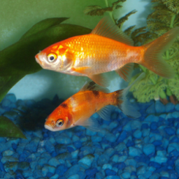 | 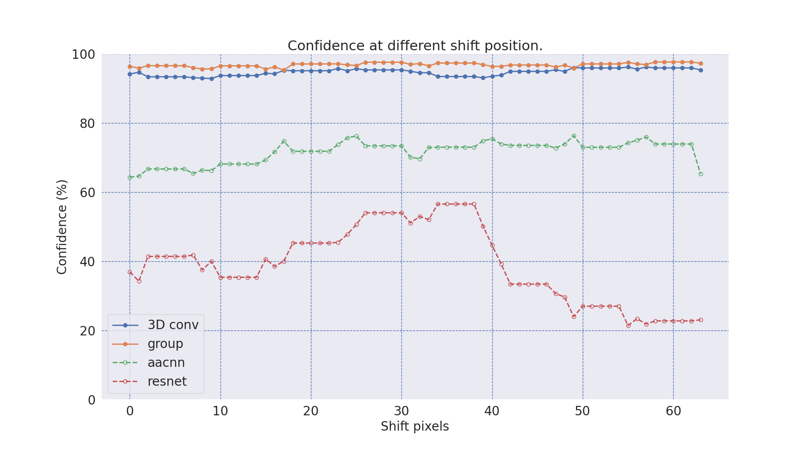 | 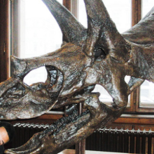 | 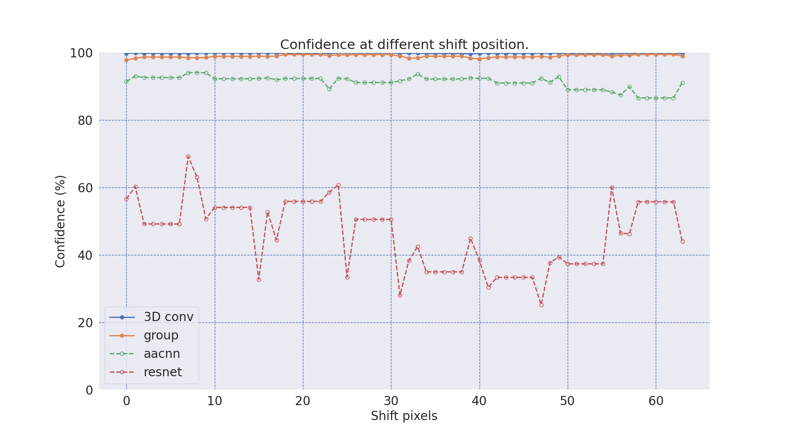 |
| 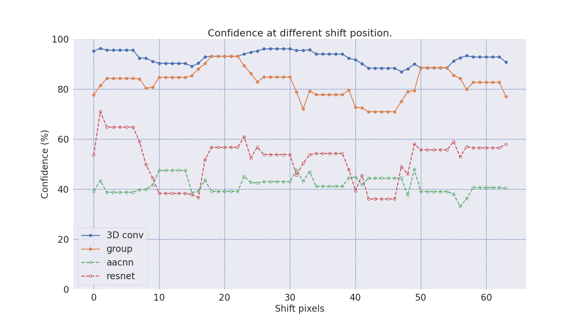 | 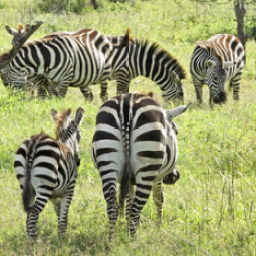 | 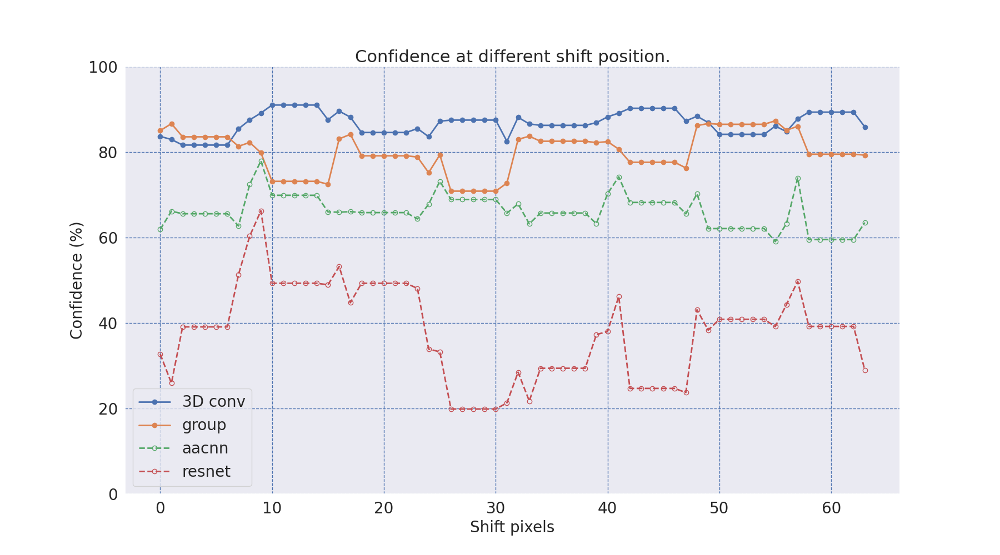 | |
| 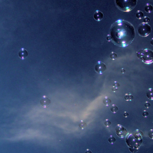 | 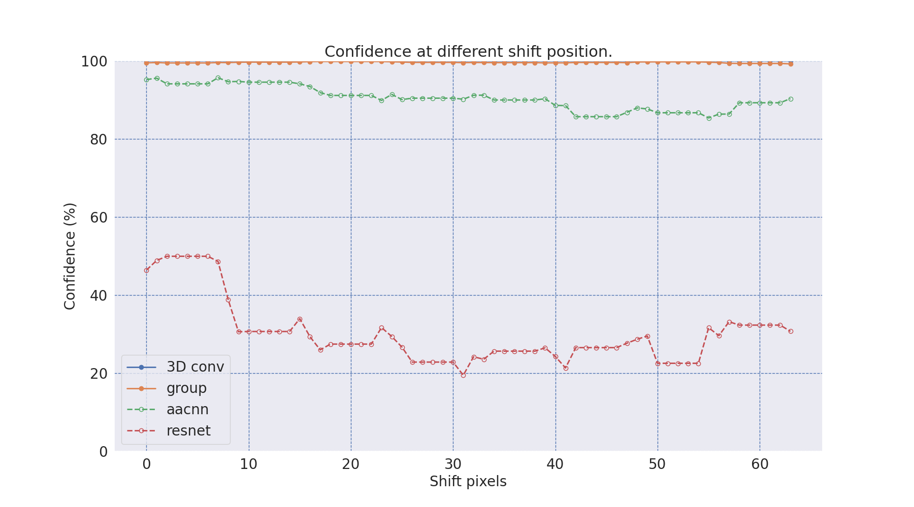 |
| Figure 9: Comparing prediction confidence between inputs at different shift positions. |
| 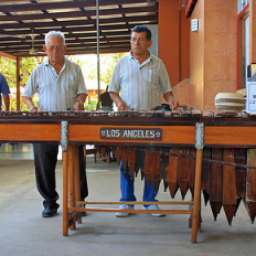 | 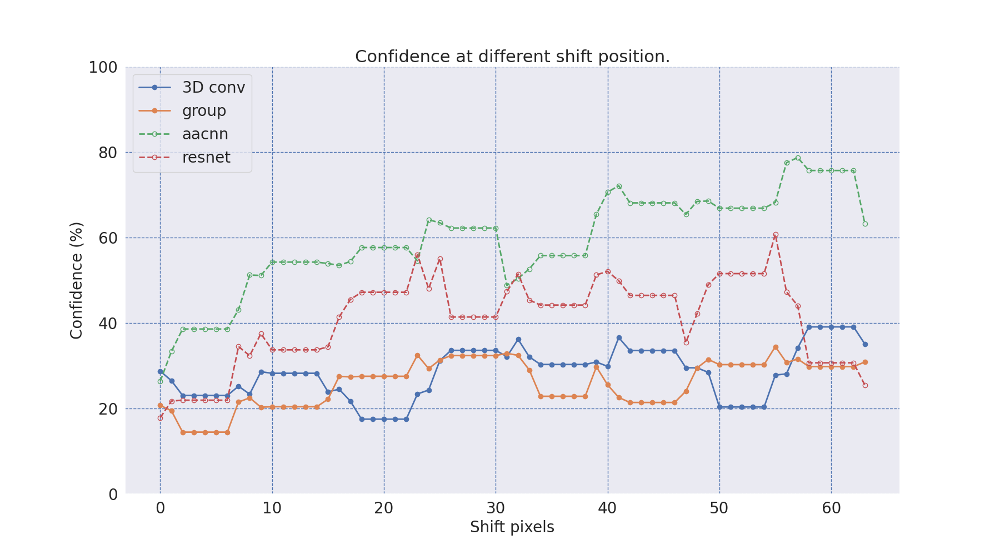 |
| Figure 10: Here we show an example where our models (blue and orange lines) perform worse in prediction confidence when comparing with ResNet and AACNN [1] (green and red dot lines). However, our models are still predicting correctly and our prediction confidence is much more stable across pixel shifts. (ground truth label: marimba) |
5. Conclusion |
| Given that CNN is not shift-invariant, we proposed a shift-invariant model to replace any layers with stride-2 down-sampling. Rearranging $4$ feature maps of $4$-neighbor from $4$ different offset preserves all information. By applying group convolution or 3D convolution, our module prioritizes extracting high-frequency spatial information first along the $D$ axis. Then, $1\times1$ convolution is used to aggregate and resize. In our experiment, we replace several down-sampling layers with our module. Both the quantitative and qualitative results show our robust performance when input images are shifted. |
6. Future Work |
|
Compared to simply using a Gaussian blur kernel to aggregate the information, we believe that by using
our shift-invariant modules with learnable parameters, we can help existing methods get good performance
when solving tasks that require sharp fine-grained pixel-level learning e.g., semantic segmentation or
conditioned image generation. Thus, we would like to test our modules on these tasks. Furthermore, to get more hints and insights into our module, we would like to analyze its property by visualizing the filters and feature maps by various visualization techniques! |
 |
| Short description if wanted |
 |
F. Author, S. Author, T. Author. Creative and Descriptive Paper Title. In Conference, 20XX. (hosted on ArXiv) |
|
|
References |
| 1. Richard Zhang. Making convolutional networks shift-invariant again. ICML 2019 |
| 2. Gao Huang, Shichen Liu, Laurens Van der Maaten, and Kilian Q Weinberger. Condensenet: An efficient densenet using learned group convolutions. CVPR 2018 |
| 3. D. Tran, L. Bourdev, R. Fergus, L. Torresani, and M. Paluri. Learning spatiotemporal features with 3d convolutional networks. ICCV 2015 |
Acknowledgements |